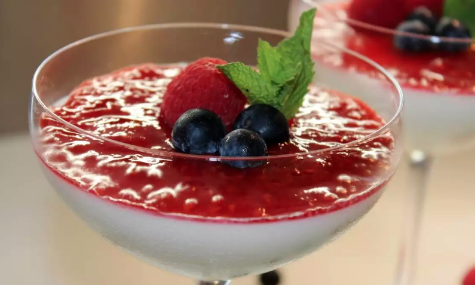
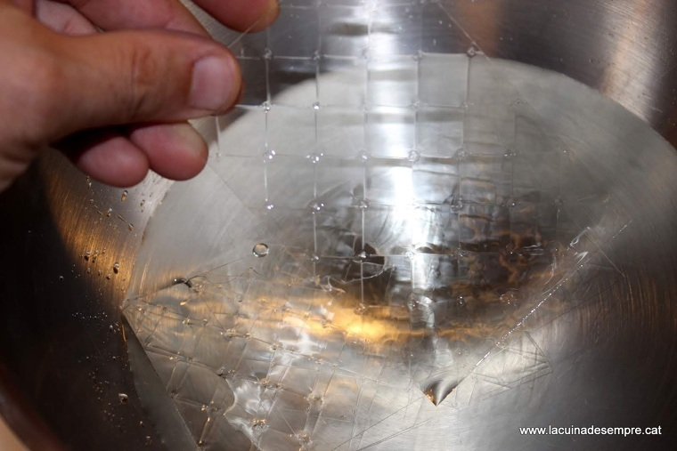
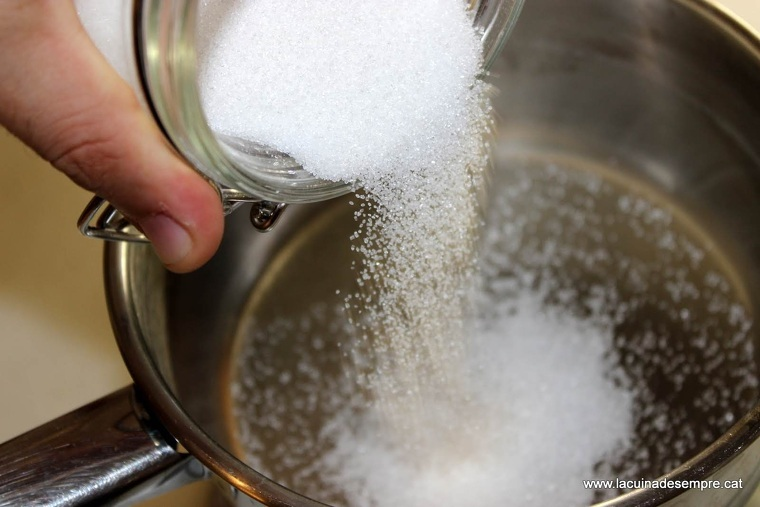
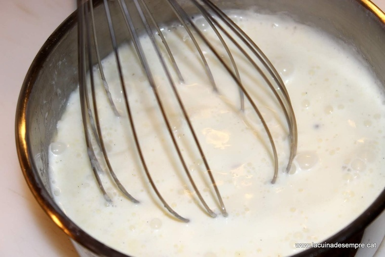
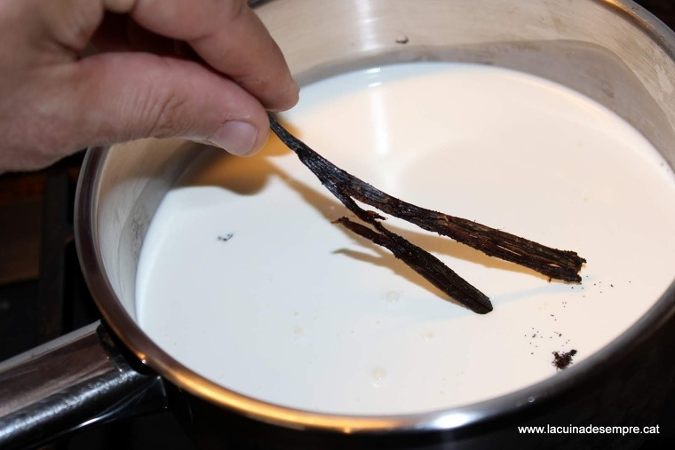
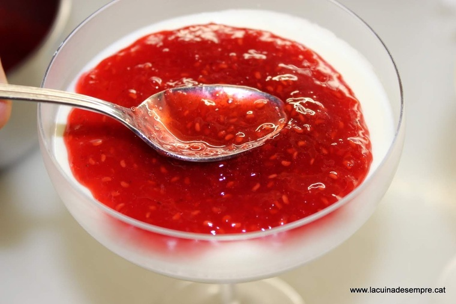

La panacota (de l'italià panna cotta, literalment "nata cuita") són unes postres típiques de la regió italiana del Piemont. S'elabora amb nata, llet, sucre, vainilla i gelificants, i se sol adornar amb melmelades de fruites vermelles. Es tracta d'unes postres de senzilla elaboració. Cal posar al foc mig litre de nata amb quatre cullerades de sucre i una beina de vainilla i fer una infusió perquè prengui gust, és a dir, porteu-la a ebullició i deixeu-la reposar una mica. Mentrestant, haureu posat a remullar en aigua freda quatre fulles de gelatina que, quan s'estovin, escorrereu amb la punta dels dits i afegireu a la nata calenta ja sense la vainilla. Mescleu bé, repartiu en quatre recipients i guardeu-la a la nevera durant almenys quatre hores i fins al moment de menjar-la. 
Comenceu per posar en remull les fulles de gelatina. Poseu un bon raig d'aigua en un bol.
poseu el sucre en un cassó per bullir..
Aboqueu dins el mateix cassó la nata..
Poseu la polpa i la veina dins la nata i deixeu que arrenqui el bull.
agafeu la panacota y monteu tot el plat al vostre gust.
bon profit.